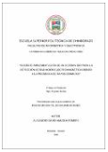

Examinando por Autor "Amagua Romero, Alejandro David"

Diseño e implementación de un sistema SDR para la detección de radiación electromagnética debido a la presencia de rayos cósmicos
The Earth is constantly impacted by cosmic radiation, composed of high-energy particles with varying electric and magnetic fields. The objective of this work was to design and implement an SDR system to detect such electromagnetic radiation. The methodology followed was, as a first step, to build a logarithmic periodic antenna (LPDA) and then use a software-defined radio (SDR) to capture and analyze the signals. The results demonstrate the feasibility of the system for cosmic ray detection.